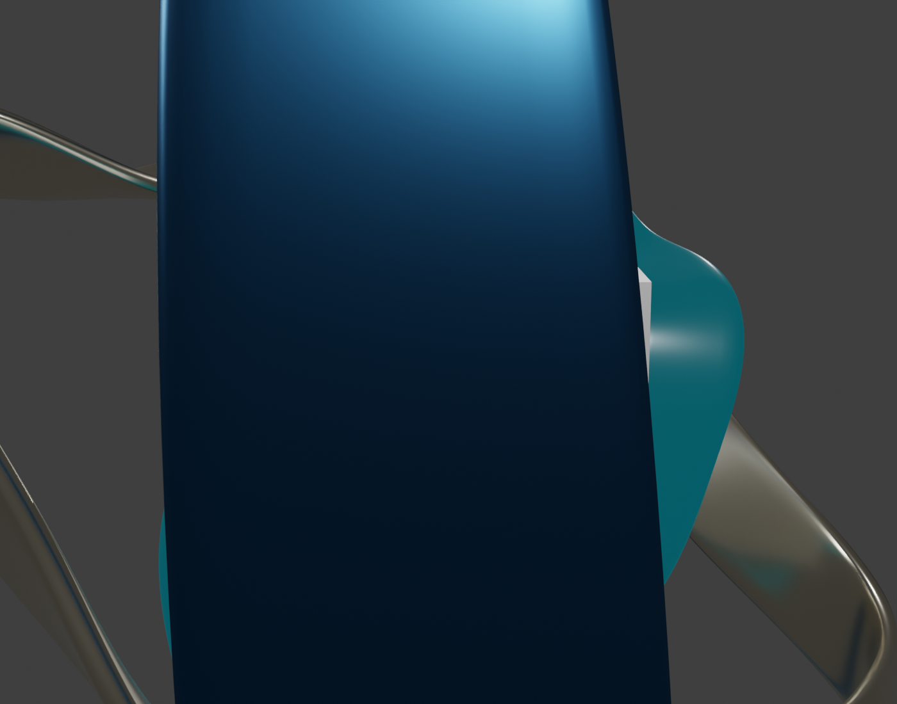

Blender → GLB → Three.js
Three-Band Energy Sculpture
Explore the interactive 3D sculpture, then inspect the exact code, data transformations, and project handoff that produced it.

Blender → GLB → Three.js
Explore the interactive 3D sculpture, then inspect the exact code, data transformations, and project handoff that produced it.
